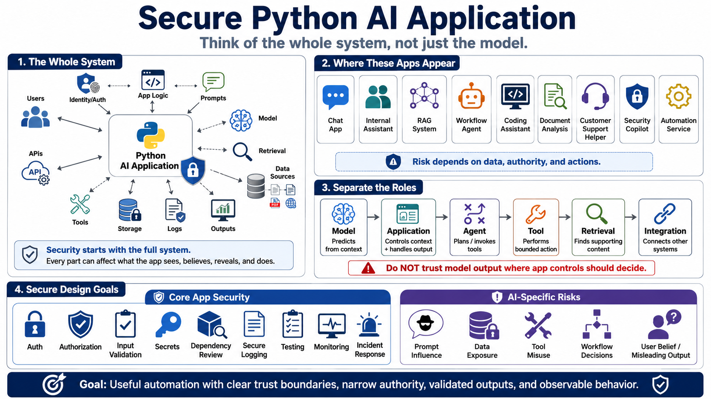

What Secure Python AI Applications Mean
Connecting to LMS... Progress: in progress

Narration
A secure Python AI application is more than a Python program that calls a model. It is a system that combines application logic, users, identities, prompts, model responses, data sources, retrieval, tools, APIs, storage, logs, and outputs. Each part can influence what the application sees, what it believes, what it reveals, and what it does. Security work starts by treating the whole system as the product, not just the model endpoint or the prompt string.
These applications appear in many forms: chat applications, internal assistants, retrieval augmented generation systems, workflow agents, coding assistants, document analysis tools, customer support helpers, security copilots, and automation services. Some are interactive. Some run in background jobs. Some summarize documents, call tools, draft tickets, search internal knowledge, or help users make decisions. The security stakes depend on the data exposed, the authority granted, and the actions the application can influence.
It helps to separate roles. A model generates predictions from context. An application decides what context the model receives and what happens with the output. An agent can plan or invoke tools. A tool performs a bounded capability such as reading a record, creating a ticket, querying a database, or calling an API. A retrieval system finds supporting content. An integration connects the application to another system. Confusing these roles often leads teams to trust model output where application controls should be making the decision.
AI application security is not only model safety. Ordinary Python application security still applies: authentication, authorization, input validation, output encoding, secrets management, dependency review, secure logging, testing, monitoring, and incident response. AI-specific risks appear when natural-language input can influence data access, tool calls, workflow decisions, or user beliefs. The secure design goal is useful automation with clear trust boundaries, narrow authority, validated outputs, and observable behavior.